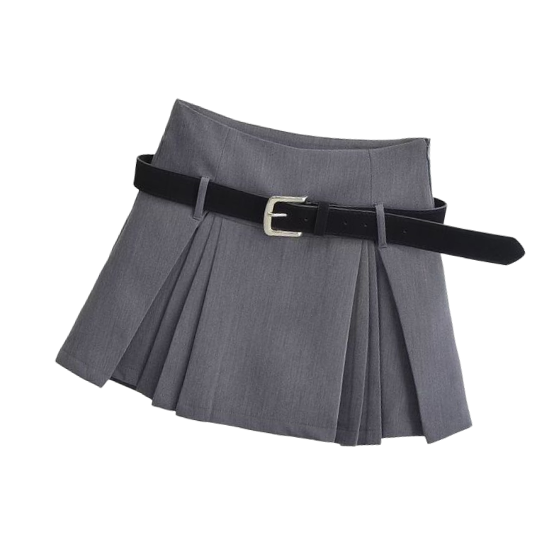
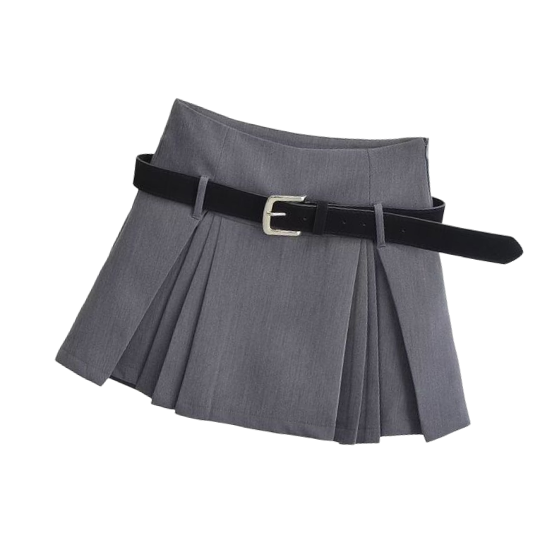
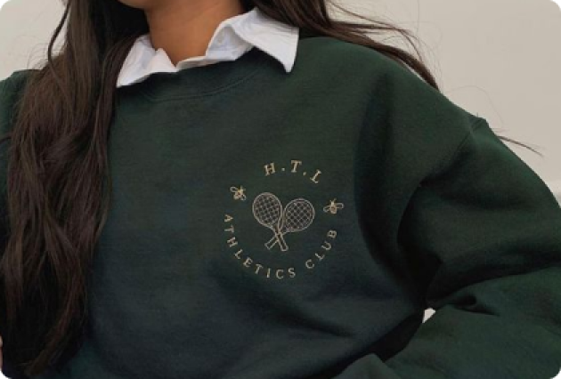
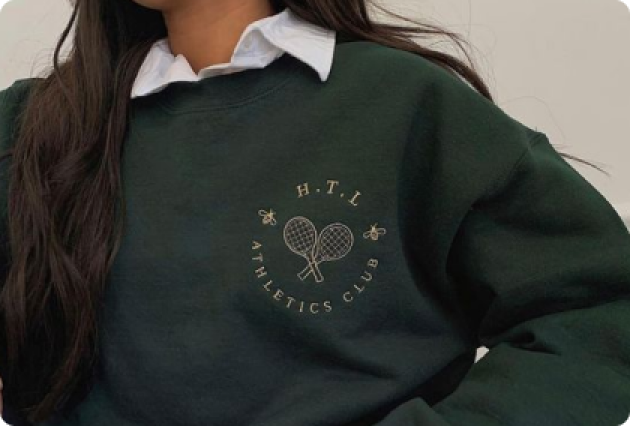
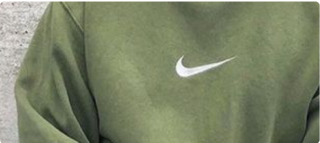
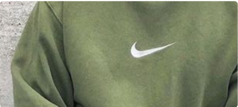

Узнайте о модных трендах и тенденциях в одежде
поколения альфа


 



После миллениалов и зуммеров бренды присматриваются к Alpha: какой будет мода
Подрастает новое поколение Альфа (Alpha) — дети, родившиеся после 2010 года. На их становление и развитие большое влияние будут иметь соцсети. Так что гаджеты и технологии для поколения «Альфа» — это даже не игрушки, а необходимость. Каждый раз, когда появляется новая группа потребителей, модные бренды пытаются быть в курсе перемен. Им важно досконально изучить портрет современного человека.
Нынешние дети «Альфа» живут в более социально- сознательном мире, который сосредотачивается на инклюзивности и толерантности, на что индустрия моды уже стала обращать внимание.

Толерантность в индустрии моды
После миллениалов и зуммеров бренды присматриваются к Alpha: какой будет мода

Толерантность в индустрии моды


Уличная мода

Подиум
Знаменитости и тренды

Тренды в одежде

Актуальные сочетания
Социолог Марк Маккриндл, которому приписывают авторство этого термина, говорит, что примерно 2,5 миллиона «Альф» рождаются в мире еженедельно, и ожидается, что к 2025 их количество достигнет 2 млрд.
Поэтому брендов одежды и других товаров потребления значительно увеличится. Численность людей поколения «Альфа» быстро растет, и поэтому это огромная возможность для роста числа брендов.
Уличная мода
Подиум
Знаменитости
и тренды
Тренды
в одежде
Актуальные
сочетания
Социолог Марк Маккриндл, которому приписывают авторство этого термина, говорит, что примерно 2,5 миллиона «Альф» рождаются в мире еженедельно, и ожидается, что к 2025 их количество достигнет 2 млрд.
Поэтому брендов одежды и других товаров потребления значительно увеличится. Численность людей поколения «Альфа» быстро растет, и поэтому это огромная возможность для роста числа брендов.
Как развивается гендерно-нейтральная мода — один из главных трендов ближайших лет

Мужские рубашки, мешковатые худи, оверсайз-футболки и «непонятные» джинсы бойфрендов начали постепенно перекочёвывать в женские луки. Правда, мужчины оставались мужчинами, и не покушались на элементы дамского гардероба. Даже самые нейтральные. Переход к гендерно-гибкой моде отчасти обусловлен изменением культурного и социального отношения к вопросам пола в разных регионах и между поколениями. . Бренды, стремящиеся предлагать гендерно изменчивую моду, могут, например, разработать новые таблицы размеров, ориентированные на более широкий круг покупателей.
 



Как развивается гендерно-нейтральная мода — один из главных трендов ближайших лет
Мужские рубашки, мешковатые худи, оверсайз-футболки и «непонятные» джинсы бойфрендов начали постепенно перекочёвывать в женские луки. Правда, мужчины оставались мужчинами, и не покушались на элементы дамского гардероба. Даже самые нейтральные. Переход к гендерно-гибкой моде отчасти обусловлен изменением культурного и социального отношения к вопросам пола в разных регионах и между поколениями. Бренды, стремящиеся предлагать гендерно изменчивую моду, могут, например, разработать новые таблицы размеров, ориентированные на более широкий круг покупателей.


Как развивается гендерно-нейтральная мода — один из главных трендов ближайших лет
Мужские рубашки, мешковатые худи, оверсайз-футболки и «непонятные» джинсы бойфрендов начали постепенно перекочёвывать в женские луки. Правда, мужчины оставались мужчинами, и не покушались на элементы дамского гардероба. Даже самые нейтральные. Переход к гендерно-гибкой моде отчасти обусловлен изменением культурного и социального отношения к вопросам пола в разных регионах и между поколениями. Бренды, стремящиеся предлагать гендерно изменчивую моду, могут, например, разработать новые таблицы размеров, ориентированные на более широкий круг покупателей.


 



Поколение альфа
Поколение современных подростков открыто к изобретениям последних пяти лет. Для них все и вся в мире будут соединены независимо от того, где находятся географически. В их мире менять можно будет даже человеческий организм. А вещи они будут распечатывать «из ничего». По мнению социологов, поколение «Альфа» будет жадно впитывать все новое, нередко пренебрегать обучением и теорией, однако отдавать все свое время открытиям в области автостроительства, медицины, с/х производства и даже психоанализа.
Поколение Альфа сегодня принято идеализировать: это они рождаются с гаджетом в руках и начинают «говорить» на цифровом языке едва ли не с пеленок; это им создавать симбиоз с искусственным интеллектом, осваивать полную цифровизацию и жить на скоростях и возможностях компьютерного разума — за ними вся мощь очень ощутимо грядущего нового мира. Это да. Но давайте подумаем, кто создал этот «новый мир»?

Поколение альфа

Поколение альфа
Поколение альфа
Поколение альфа
Поколение альфа

Поколение альфа

Поколение альфа


Биохакинг учит человека проводить апгрейд собственного организма, направляя его в сторону увеличения производительности и продления срока жизни.
Экологичная мода и иллюстрация разумного потребления
Экологичная мода (или эко-мода) — это направление в моде, которое нацелено на заботу об экологии. Экологичная мода принимает во внимание здоровье потребителей, здоровье планеты (почва, вода, энергия, газы, мусор), здоровье животных, здоровье людей, работающих в индустрии моды.
Экологичная мода предполагает, что компания использует для пошива материалы, производство которых наносит меньший ущерб окружающей среде, чем обычные ткани. Например, органический хлопок, переработанный полиэстер или переработанный хлопок. Помимо этого, производитель старается уменьшить экослед самого производства и, естественно, заботится о благополучии своих работников.